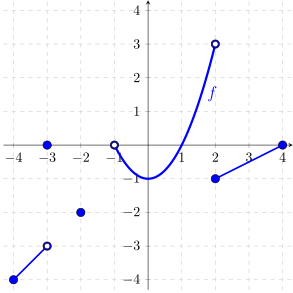

- (a)
- Find the domain and range of \(f\)
- (b)
- Find the values of \(f(-3),f(-2), f(-1),f(2)\)
- (c)
- Find the intervals on which \(f(x)\) is positive. Find the intervals on which \(f(x)\) is negative.
- (d)
- Find the intervals on which \(f\) is increasing. Find the intervals on which \(f\) is decreasing.
- (e)
- True or False: \(f(1.5) < f(2)\)